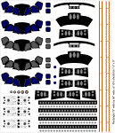

Realspace_300DPI.jpg |

Shuttle_Decal_2X.GIF |
| RealSpace Models 1/72 Decal Sheet. Window frames meant for clear windows, not opaque. Also the "LOADED" markings are about twice as big as they should be and the wrong font. Otherwise the rest of the decals are excellent, and were used on the orbiter. | Custom decals drawn by George, printed by Tango Papa Decals. Window frames filled in with blue and gray, including a set with the boltheads and washers (See Phil Broad's web site with Atlantis pics). Aft umbilical sets. Nose thruster sets with black surrounding them. Aft thruster sets. At far right, a test for the filler surrounding the joints of SRB systems tunnels. |
|
ShuttleDryTransfer.GIF |
No_Tiles_small.GIF |
Dry Transfers drawn by George for the 2000 WSMC model. The "LOADED" markings were used on the SRB's, each SRB has 12 (the extras were very useful since there were a few screw-ups in applying them). Some other transfers were used for the display base. The others went unused. Had there been a new orbiter, the rectangles along the righthand side were intended for simulating the hinges along the bay doors. | Don't ask me about tiles, and I won't ask you about
every rivet, seam, screw, and bolt your 1/72 prototype had.
|
SRBnoseDecal2.gif |
SRBnoseDecal.gif |
SRB nose roll patterns were drawn out as a generic "E" type shape useful for all three markings.
| "Multiple E" patterns printed onto a sheet of paper, then paper rubber cemented to black decal sheet. Decals cut out to the needed marking type, paper peeled off, and marking applied to proper place on the SRB nose (frustum) |

{kind=link}
{kind=link}
{kind=link}
{kind=link}
{kind=link}
{kind=link}
{kind=link}